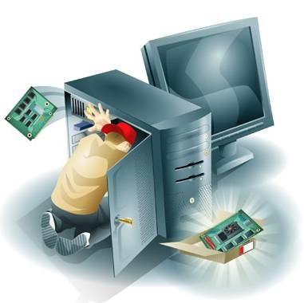
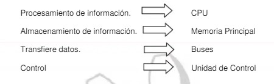
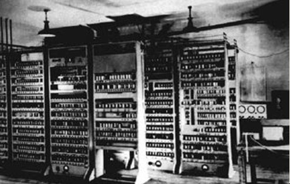
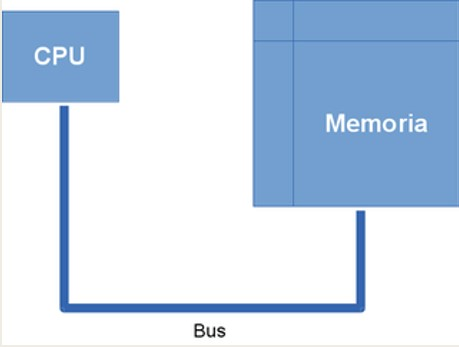
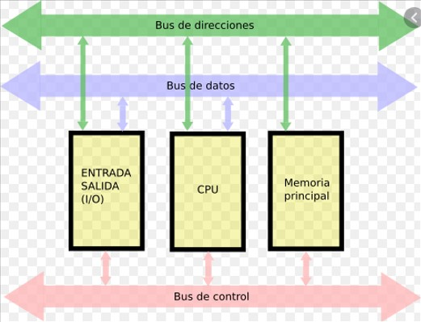
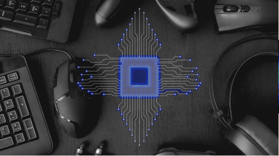
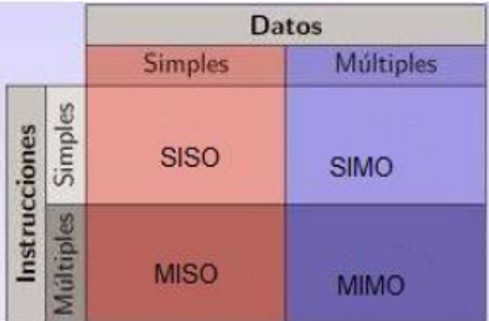
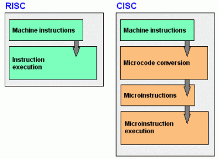
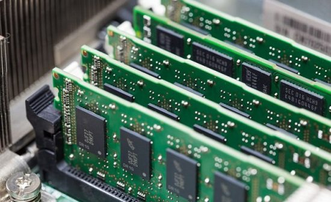
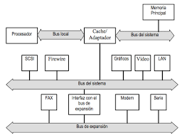

La arquitectura de computadoras se refiere a los atributos de un sistema que son visibles a un programador o para decirlo de otra manera, son aquellos atributos que tienen un impacto directo en la ejecución lógica de un programa.Entre los ejemplos de atributos arquitectónicos se encuentran:
La organización de las computadoras se refiere a las unidades funcionales y sus interconexiones, que materializan las especificaciones arquitectónicas. Entre los atributos de organización se incluyen aquellos detalles de hardware que son transparentes al programador, tales como:
En términos generales una computadora realiza cuatro funciones:

Estas arquitecturas se desarrollaron en las primeras computadoras electromecánicas y de tubos de vacío. Aun
son usadas en procesadores empotrados de gama baja y son la base de la mayoría de las arquitecturas
modernas.

Arquitectura Mauchly-Eckert (Von Newman) La principal desventaja de esta arquitectura, es que el bus de datos y direcciones único se convierte en un cuello de botella por el cual debe pasar toda la información que se lee de o se escribe a la memoria, obligando a que todos los accesos a esta sean secuenciales. Esto limita el grado de paralelismo (acciones que se pueden realizar al mismo tiempo) y por lo tanto, el desempeño de la computadora. Este efecto se conoce como el cuello de botella de Von Newman.

Es una de las tecnologías utilizadas para realizar la segmentación o paralelismo. Divide el procesador, en etapas, procesa una instrucción diferente en cada una y trabaja con varias a la vez. Las arquitecturas segmentadas o con segmentación del cauce buscan mejorar el desempeño realizando paralelamente varias etapas del ciclo de instrucción al mismo tiempo. El procesador se divide en varias unidades funcionales independientes y se dividen entre ellas el procesamiento de las instrucciones.

Se denomina multiprocesador a un computador que cuenta con dos o más microprocesadores (CPU’s). El multiprocesador puede ejecutar simultáneamente varios hilos pertenecientes a un mismo proceso o bien a procesos diferentes.

Las CPU de multiprocesamiento:

En la arquitectura computacional, CISC es un modelo de arquitectura, en donde los microprocesadores tienen
un conjunto instrucciones que caracterizan por ser muy amplio y permitir operaciones complejas entre
operandos, situados en la memoria o en los registros internos.
Entre las ventajas de CISC DESTACAN LAS SIGUIENTES:
*Reduce la dificultad de crear compiladores.
*Permite reducir el costo total del sistema.
*Reduce los costos de creación de software.
*Mejora la compactación de código.
*Facilita la depuración de errores.
Arquitectura computacional, RISC (Reduced Instruction Set
Computer) es una filosofía de diseño de CPU para computadora que está a favor de conjuntos de instrucciones
pequeñas y simples que toman menor tiempo para ejecutarse.

La unidad central de procesamiento, UCP o CPU (por el acrónimo en inglés de central processing unit), o
simplemente el procesador o microprocesador, es el componente del computador y otros dispositivos
programables, que interpreta las instrucciones contenidas en los programas y procesa los datos.
ALU (Arithmetic Logic Unit) es un circuito digital que realiza como su nombre lo indica las operaciones
aritméticas y lógicas entre datos de un circuito; suma, resta, divide y multiplica.
Todos los microprocesadores(CPU´s) incluyen al menos una ALU, que varía su poder de complejidad según su
finalidad
Los registros que encuentran dentro de cada procesador su función principales almacenar los valores de cada
uno de los datos, comandos, instrucciones o estados binarios que son los que ordenan qué dato debe
procesarse, así como la forma en la que se debe realizar.
Cada registro puede contener una instrucción, una dirección de almacenamiento o cualquier tipo de dato.
Es un dispositivo que puede mantenerse en por lo menos dos estados estables por un cierto periodo de tiempo. Cada uno de estos estados estables puede utilizarse para representar un bit. Un dispositivo de memoria completo se forma con varias celdas básicas y los circuitos asociados para poder leer y escribir dichas celdas básicas, agrupadas como localidades de memoria que permitan almacenar un grupo de N bits.

La memoria del semiconductor utiliza en su arquitectura circuitos integrados basados en semiconductores para
almacenar información.
Existen memorias de semiconductor de ambos tipos: volátiles y no volátiles.
En las computadoras modernas, la memoria principal consiste casi exclusivamente en memoria de semiconductor
volátil y dinámica, también conocida como memoria dinámica de acceso aleatorio o más comúnmente RAM (Random
Access Memory).
La memoria caché es un búfer especial de memoria que poseen las computadoras, que funciona de manera similar
a la memoria principal, pero es de menor tamaño y de acceso más rápido.
En computación, entrada/salida, también abreviado E/S o I/O (del original en inglés input/output), es la colección de interfaces que usan las distintas unidades funcionales (subsistemas) de un sistema de procesamiento de información para comunicarse unas con otras, o las señales (información) enviadas a través de esas interfaces. Las entradas son las señales recibidas por la unidad, mientras que las salidas son las señales enviadas por ésta.
En primer termino hablaremos de los dispositivos de entrada, que como su nombre lo indica, sirven para
introducir datos (información) a la computadora para su proceso. Los datos se leen de los dispositivos
de entrada y se almacenan en la memoria central o interna.
Los dispositivos de Entrada y Salida permiten la comunicación entre la computadora y el usuario
El problema con E/S programada es que el CPU tiene que esperar un tiempo considerable a que el
módulo de E/S en cuestión esté preparado para recibir o transmitir los datos. El CPU debe estar
comprobando continuamente el estado del módulo de E/S. Se degrada el desempeño del sistema.
En arquitectura de computadores, el bus (o canal) es un sistema digital que transfiere datos entre los componentes de una computadora o entre computadoras. Está formado por cables o pistas en un circuito impreso, dispositivos como resistores y condensadores además de circuitos integrados.
*Líneas de datos: Llevan datos y también comandos para los dispositivos de entrada / salida.
*Líneas de dirección: Llevan direcciones de memoria en acceso a memoria, o permiten seleccionar un
dispositivo conectado al bus.
*Líneas de control: Son señales de control de acceso y uso del bus.
*BUS LOCAL: Conecta al procesador con la cache y con algún dispositivo e/s muy rápido.
*BUS DEL SISTEMA: Conecta al procesador (a través de la cache) con la memoria del sistema y con un
segundo nivel de dispositivos de velocidad media.
*BUS DE EXPANSION: Se conecta al bus del sistema y hace de interfaz entre este y los dispositivos más
lentos

Una interrupción (del inglés Interrupt Request, también conocida como petición de interrupción) es una señal recibida por el procesador de un ordenador, indicando que debe "interrumpir" el curso de ejecución actual y pasar a ejecutar código específico para tratar esta situación. Las interrupciones surgen de la necesidad que tienen los dispositivos periféricos de enviar información al procesador principal de un sistema informático.